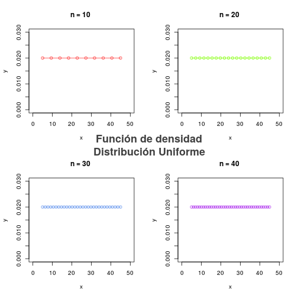
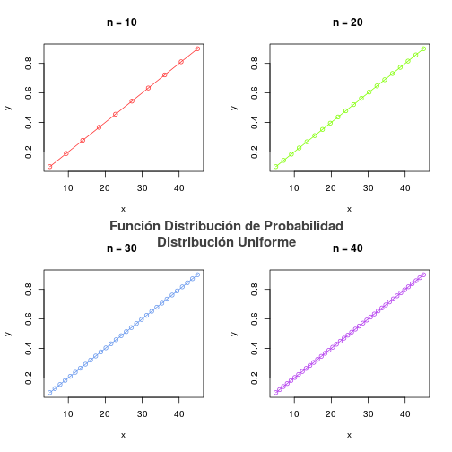
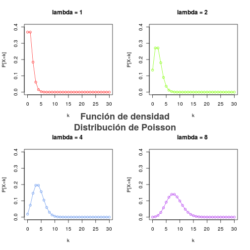
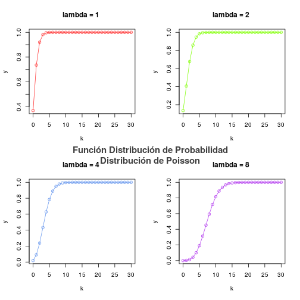
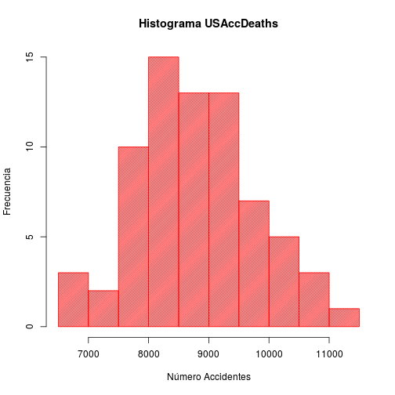
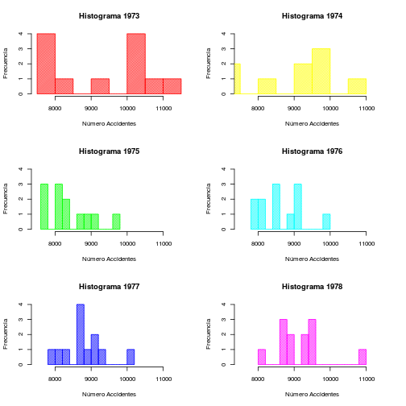
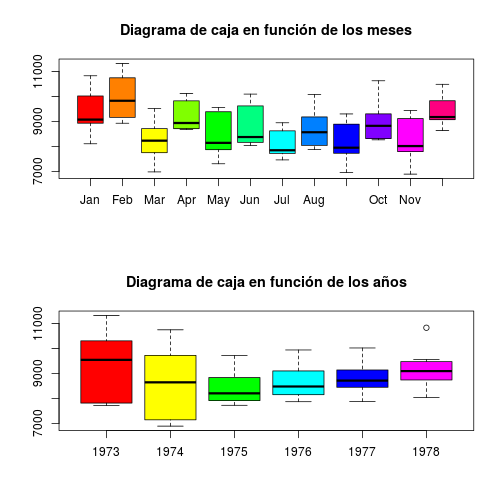
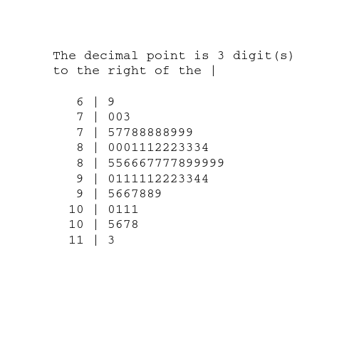
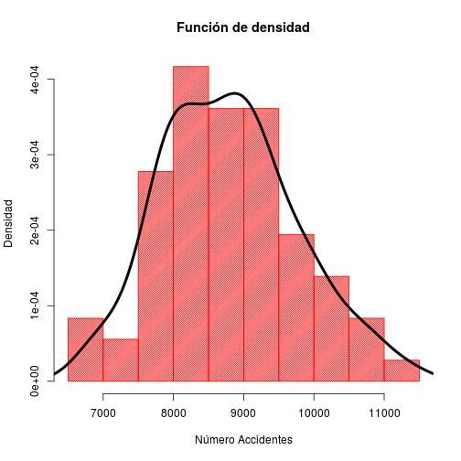
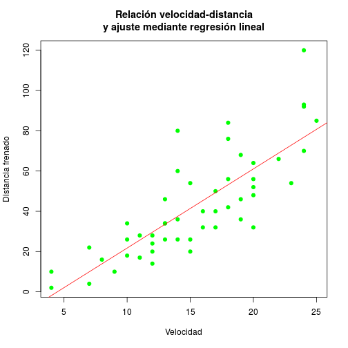

-
Busca
qunifydunify representa las funciones correspondientes para la unifirme entre 0 y 1.?Distributionsmuestra todas las distribuciones que existen en R. Selecciona una y represéntala.Hemos escrito y mejorado la función
Dibujaque aparece en el punto 7.1 para que represente la distribución uniforme, \(U(a,b)\). De manera similar desarrollaremos una función para una distribución diferente y representaremos su función de densidad así como la distribución de probabilidad.Hablemos de las funciones que nos pide el ejercicio detenidamente. El método
qunif(x,min=0,max=1)nos devolverá la función cuantil, \(P[X\leq x]\), en el intervalo \([\)min, max\(]\) para la distribución uniforme. Por otra parte, la funcióndunif(x,min=0,max=1)nos devolverá la densidad del valor \(x\) en \(U(a,b)\), donde \(a\) y \(b\) son el mínimo el máximo especificados en los parámetros. En la función desarrollada también utilizaremospunif(x,min=0,max=1), que devolverá el valor de la función de distribución de probabilidad.Hablemos ahora de la función desarrollada para representar la distribución uniforme. En los parámetros especificaremos el valor de el número de elementos (
n), la cantidad que difieren \(a\) y \(b\) (alpha), el mínimo y el máximo de la distribución (mini, maxi), el número de gráficas a representar (fil, col) y si representamos la función de densidad o de distribución de probabilidad (probability=TRUE / FALSE). Dentro de ella comprobaremos que todos estos parámetros están bien especificados y mostraremos, de forma bonita, las gráficas.El enunciado del ejercicio pide que se muestren las funciones en el intervalor \([0,1]\), que es lo que hará la función cuando la ejecutemos sin parámetros. Para ver un funcionamiento más complejo, la ejecutaremos con otros parámetros diferentes.
plotDistribution.Uniform <- function(n=30,alpha=0.001,mini=0,maxi=1, fil=2,col=2,probability=FALSE){ if(n<10) stop("Hacen falta mas numeros") if(maxi<=mini) stop("El mínimo ha de ser menor que el máximo") if(alpha>0.5) stop("El máximo valor para alpha es 0.5") n<-as.integer(n) a<-qunif(alpha, min=mini, max=maxi) b<-qunif(1-alpha, min=mini, max=maxi) colors=c("firebrick1","chartreuse1","cornflowerblue","darkorchid2") if(!probability){ par(mfrow=c(fil,col)) for (i in 1:(fil*col)){ x<-seq(a,b,,i*n) plot(x,dunif(x, min=mini, max=maxi),col=colors[i], xlim=c(mini,maxi), ylim=c(0, 1.5/(maxi-mini)), ylab="y", main=paste("n =", i*n, "", sep=" "), type="o") } title(main="Función de densidad\nDistribución Uniforme", line = -22, outer = TRUE, cex.main=1.8, col.main="gray25") }else{ par(mfrow=c(fil,col)) for (i in 1:(fil*col)){ x<-seq(a,b,,i*n) plot(x,punif(x, min=mini, max=maxi),col=colors[i], main=paste("n =", i*n, "", sep=" "), ylab="y",type="o") } title(main="Función Distribución de Probabilidad\nDistribución Uniforme", line = -23, outer = TRUE, cex.main=1.5, col.main="gray25") } }
plotDistribution.Uniform(n=10, alpha=0.1, mini=0, max=50)
plotDistribution.Uniform(n=10, alpha=0.1, mini=0, max=50, probability=TRUE)
Entre todas las distribuciones que obtenemos al ejecutar
?Distributionsnos quedaremos, por ejemplo, con la distribución de Poisson, que representaremos utilizandodpoisyppois(en este caso no necesitaremosqpois. Como parámetros le pasaremos el valor \(\lambda\) de la distribución de Poisson (que se irá doblando en cada gráfica) y \(k\) que representará el número de ocurrencias del evento. Así, escribimos la función para representarla como en el caso anterior y obtenemos:plotDistribution.Poisson <- function(k=30,lambda=1, fil=2,col=2,probability=FALSE){ if(lambda<=0) stop("lambda ha de ser positivo") colors=c("firebrick1","chartreuse1","cornflowerblue","darkorchid2") if(!probability){ par(mfrow=c(fil,col)) for (i in 1:(fil*col)){ x<-seq(0,k) plot(x,dpois(x, lambda=lambda*2^(i-1)), col=colors[i], xlab="k", type="o", ylim=c(0,0.4),ylab="P[X=k]", main=paste("lambda =", lambda*2^(i-1),"",sep=" ")) } title(main="Función de densidad\nDistribución de Poisson", line = -22, outer = TRUE, cex.main=1.8, col.main="gray25") }else{ par(mfrow=c(fil,col)) for (i in 1:(fil*col)){ x<-seq(0,30) plot(x,ppois(x, lambda=lambda*2^(i-1)),col=colors[i], type="o", main=paste("lambda =", lambda*2^(i-1), "", sep=" "), ylab="y", xlab="k") } title(main="Función Distribución de Probabilidad\nDistribución de Poisson", line = -23, outer = TRUE, cex.main=1.5, col.main="gray25") } }
plotDistribution.Poisson()
plotDistribution.Poisson(probability=TRUE)
Con este formato de función podremos generar una representación para cada distribución,
plotDistribution.NOMBRE, haciendo ligeros cambios en función de los párametros que admita la distribución elegida. -
Haz una estadística descriptiva con unos datos de tu elección, que incluya
summary,hist,boxplot,stem,mean,variance,median, ...Al igual que en la entrega anterior, utilicemos el paquete
datasetspara escoger el conjunto de datos sobre el que realizar nuestra estadística descriptiva. Optaremos por los datos almacenados enUSAccDeaths, que contendrán información sobre el número de muertes en accidentes por mes en Estados Unidos en una serie de años.library(datasets) USAccDeaths
## Jan Feb Mar Apr May Jun Jul Aug Sep Oct Nov Dec ## 1973 9007 8106 8928 9137 10017 10826 11317 10744 9713 9938 9161 8927 ## 1974 7750 6981 8038 8422 8714 9512 10120 9823 8743 9129 8710 8680 ## 1975 8162 7306 8124 7870 9387 9556 10093 9620 8285 8466 8160 8034 ## 1976 7717 7461 7767 7925 8623 8945 10078 9179 8037 8488 7874 8647 ## 1977 7792 6957 7726 8106 8890 9299 10625 9302 8314 8850 8265 8796 ## 1978 7836 6892 7791 8192 9115 9434 10484 9827 9110 9070 8633 9240
# Es un dataframe? is.data.frame(USAccDeaths)
## [1] FALSE
# Es un time series? is.ts(USAccDeaths)
## [1] TRUE
Podemos ver que este conjunto de datos no está almacenado en un
dataframe, que es lo que nos facilita la realización de una estadística descriptiva; está guardado comots, time series. Por tanto, nos encargaremos de transformarlo en undataframey así agilizar nuestro trabajo.datos<-as.data.frame(matrix(USAccDeaths,nrow=6,ncol=12)) colnames(datos) <- c("Jan","Feb","Mar","Apr","May","Jun","Jul","Aug","Sep","Oct","Nov","Dec") rownames(datos) <- c("1973","1974","1975","1976","1977","1978") # Es un dataframe? is.data.frame(datos)
## [1] TRUE
Una vez tenemos un estructura de datos de tipo
dataframe, podemos empezar la estadística descriptiva. Primero veremos un resumen con valores mínimos y máximos, medias, etcétera, en función de los meses y en función de los años.# Resumen en función de los meses summary(datos)
## Jan Feb Mar Apr May ## Min. : 8106 Min. : 8927 Min. :6981 Min. : 8680 Min. :7306 ## 1st Qu.: 8948 1st Qu.: 9299 1st Qu.:7822 1st Qu.: 8718 1st Qu.:7934 ## Median : 9072 Median : 9826 Median :8230 Median : 8936 Median :8143 ## Mean : 9337 Mean : 9967 Mean :8236 Mean : 9201 Mean :8401 ## 3rd Qu.: 9797 3rd Qu.:10542 3rd Qu.:8641 3rd Qu.: 9650 3rd Qu.:9081 ## Max. :10826 Max. :11317 Max. :9512 Max. :10120 Max. :9556 ## Jun Jul Aug Sep Oct ## Min. : 8034 Min. :7461 Min. : 7874 Min. :6957 Min. : 8265 ## 1st Qu.: 8191 1st Qu.:7730 1st Qu.: 8150 1st Qu.:7742 1st Qu.: 8434 ## Median : 8376 Median :7846 Median : 8568 Median :7949 Median : 8823 ## Mean : 8776 Mean :8073 Mean : 8717 Mean :8128 Mean : 9025 ## 3rd Qu.: 9332 3rd Qu.:8448 3rd Qu.: 9046 3rd Qu.:8694 3rd Qu.: 9189 ## Max. :10093 Max. :8945 Max. :10078 Max. :9299 Max. :10625 ## Nov Dec ## Min. :6892 Min. : 8633 ## 1st Qu.:7802 1st Qu.: 9080 ## Median :8014 Median : 9175 ## Mean :8210 Mean : 9394 ## 3rd Qu.:8884 3rd Qu.: 9680 ## Max. :9434 Max. :10484
# Si transponemos la matrix de datos, tenemos el resumen en función de los años summary(t(as.matrix(datos)))
## 1973 1974 1975 1976 1977 ## Min. : 7717 Min. : 6892 Min. :7726 Min. :7870 Min. : 7874 ## 1st Qu.: 7825 1st Qu.: 7225 1st Qu.:7976 1st Qu.:8170 1st Qu.: 8534 ## Median : 9542 Median : 8642 Median :8204 Median :8477 Median : 8712 ## Mean : 9248 Mean : 8516 Mean :8381 Mean :8633 Mean : 8796 ## 3rd Qu.:10211 3rd Qu.: 9671 3rd Qu.:8789 3rd Qu.:9085 3rd Qu.: 9126 ## Max. :11317 Max. :10744 Max. :9713 Max. :9938 Max. :10017 ## 1978 ## Min. : 8034 ## 1st Qu.: 8767 ## Median : 9092 ## Mean : 9158 ## 3rd Qu.: 9454 ## Max. :10826
Podemos ver que de media, entre los 6 años dados, el mes con menos muertes es julio, y el que más febrero. Aún así el valor mínimo y máximo de accidentes mortales corresponde a noviembre y febrero, respectivamente. Por otra parte, viendo el resumen en función de los años, el año con menos muertes de media es 1975 y con más muertes 1973.
Una vez vistos estos valores en función de los meses y de los años, veamos sobre el total del conjunto de datos cuál es la media, la matriz de covarianzas, etc.
mean(as.matrix(datos))
## [1] 8788.792
var(as.matrix(datos))
## Jan Feb Mar Apr May Jun Jul ## Jan 902212.6 -677788.3 794814.2 -395375.8 807316.6 -546894.5 539602.8 ## Feb -677788.3 844564.3 -659728.9 555989.9 -616724.9 767123.7 -444857.6 ## Mar 794814.2 -659728.9 748336.2 -409889.2 678309.4 -580192.9 469941.6 ## Apr -395375.8 555989.9 -409889.2 391783.0 -364302.8 534305.5 -256277.2 ## May 807316.6 -616724.9 678309.4 -364302.8 784211.4 -480542.3 493606.8 ## Jun -546894.5 767123.7 -580192.9 534305.5 -480542.3 742805.1 -355015.6 ## Jul 539602.8 -444857.6 469941.6 -256277.2 493606.8 -355015.6 335940.8 ## Aug -274280.4 625588.7 -328296.8 463286.8 -286651.6 631692.5 -209995.6 ## Sep 796595.7 -618546.5 713367.3 -367135.7 717884.5 -512981.7 480549.6 ## Oct -280193.7 682323.7 -334498.3 494680.3 -281939.5 676483.3 -222669.2 ## Nov 871757.0 -684885.6 781976.4 -410472.6 792853.4 -571865.8 527143.2 ## Dec -291710.6 532599.8 -327489.8 375664.2 -282429.8 524782.0 -214203.6 ## Aug Sep Oct Nov Dec ## Jan -274280.4 796595.7 -280193.7 871757.0 -291710.6 ## Feb 625588.7 -618546.5 682323.7 -684885.6 532599.8 ## Mar -328296.8 713367.3 -334498.3 781976.4 -327489.8 ## Apr 463286.8 -367135.7 494680.3 -410472.6 375664.2 ## May -286651.6 717884.5 -281939.5 792853.4 -282429.8 ## Jun 631692.5 -512981.7 676483.3 -571865.8 524782.0 ## Jul -209995.6 480549.6 -222669.2 527143.2 -214203.6 ## Aug 659231.0 -288847.3 697167.7 -335496.6 520631.0 ## Sep -288847.3 719621.9 -283914.9 792158.0 -302440.6 ## Oct 697167.7 -283914.9 760583.1 -326104.6 547238.2 ## Nov -335496.6 792158.0 -326104.6 874017.2 -346145.4 ## Dec 520631.0 -302440.6 547238.2 -346145.4 432811.6
var(t(as.matrix(datos)))
## 1973 1974 1975 1976 1977 1978 ## 1973 1800637.7 1802347.1 627418.03 655201.66 -244620.07 -390836.36 ## 1974 1802347.1 1894221.7 659100.82 667633.77 -255964.23 -458937.36 ## 1975 627418.0 659100.8 382343.33 351999.82 104599.18 41024.27 ## 1976 655201.7 667633.8 351999.82 371835.66 54648.39 8875.00 ## 1977 -244620.1 -255964.2 104599.18 54648.39 335554.75 336601.82 ## 1978 -390836.4 -458937.4 41024.27 8875.00 336601.82 468316.36
quantile(as.matrix(datos))
## 0% 25% 50% 75% 100% ## 6892.00 8089.00 8728.50 9323.25 11317.00
En este caso, la media asociada al conjunto de datos completo se obtiene calculando la media entre todas las medias de cada una de las variables. La matriz de covarianzas representa la covarianza que hay entre dos variables, y los valores de la diagonal representarán la varianza de cada una de las variables.
Veamos ahora, a través de un histograma, qué valores de accidentes se dan con más frecuencia.
hist(x=as.matrix(datos), main="Histograma USAccDeaths", breaks=10, col="red", xlab="Número Accidentes", ylab="Frecuencia", density=50)
Notar que el histograma es exactamente el mismo independientemente de si lo ponemos en función de los meses o de los años.
Mediante este histograma comprobamos que la frecuencia más común de accidentes durante todos los años de los que disponemos está en torno a 8000-8500 casos. Para finalizar el trabajo con los histogramas, realicemos uno para cada año.
colores=rainbow(6) par(mfrow=c(3,2)) for(i in 1:6){ hist(x=as.matrix(slice(datos, index=i)), main=paste("Histograma", 1972+i), breaks=10, col=colores[i], xlab="Número Accidentes", ylab="Frecuencia", density=50, xlim=c(7500,11500),ylim=c(0,4)) }
Pasemos ahora a los diagramas de caja. Realizaremos uno en función de los meses y otro en función de los años, para ver así la extensión de los datos en cada intervalo de tiempo.
par(mfrow=c(2,1)) boxplot(x=as.matrix(datos),col=rainbow(12), main="Diagrama de caja en función de los meses") boxplot(x=t(as.matrix(datos)),col=rainbow(6), main="Diagrama de caja en función de los años")
En estos diagramas vemos lo que ya habíamos mostrado al utilizar la función
summary: los cuartiles, la media y los valores máximos y mínimos. Respecto a los valores atípicos, representados por un punto solitario fuera del diagrama de caja, solo tendremos uno, que se dará en 1978 con un gran número de accidentes.Con estas gráficas también podemos ver lo comentado anteriormente: el mes con más accidentes fue febrero, y el año más cástigado 1973.
Utilicemos ahora el método
stempara calcular un diagrama de tallos y hojas. Esta representación presentará nuestros datos cuantitativos en un formato gráfico, similar a un histograma, para ayudar a visualizar la forma de nuestra distribución.plot.new() tmp <- capture.output(stem(as.matrix(datos))) tmp[1]<-"The decimal point is 3 digit(s)" tmp[2]<-"to the right of the |" text(0,1,paste(tmp, collapse='\n'), adj=c(0,1), family='mono',cex=1.5)
Para finalizar el ejercicio, veamos una estimación no paramétrica de la función de densidad del conjunto de datos utilizando el método
density, representándolo sobre nuestro histograma.hist(x=as.matrix(datos), main="Función de densidad", breaks=10, col="red", xlab="Número Accidentes", ylab="Densidad", density=50, prob=T) lines(density(as.matrix(datos)),lwd=4)
Así, vemos que nuestro conjunto de datos tiene una distribución similar a una normal centrada en 9000, aproximadamente.
-
Estudia la definición de
t.testy aplícala en casos de una y dos muestras.La función
t.testse encarga de realizar prueba T de Student, que es cualquier prueba en la que el estadístico tomado tenga una distribución de T de Student si la hipótesis nula es cierta. Esta prueba se utiliza comúnmente para determinar si las medias de dos distribuciones son iguales entre sí. Concretamente, el métodot.testrealizará pruebas de t de Studentde una y dos muestras sobre los vectores de datos que le pasemos.Comencemos utilizando esta función con el fin de comprobar las hipótesis sobre la media de una población de la que extraemos una muestra. La población sobre la que vamos a trabajar es la normal, y extraeremos varios valores con la función
rnorm, que nos proporciona valores aleatorios sobre la distribución normal.muestra <- rnorm(n=10) t.test(muestra)
## ## One Sample t-test ## ## data: muestra ## t = -0.51669, df = 9, p-value = 0.6178 ## alternative hypothesis: true mean is not equal to 0 ## 95 percent confidence interval: ## -0.7149982 0.4491099 ## sample estimates: ## mean of x ## -0.1329441
Vemos que el test funciona medianamente bien aún teniendo tan pocos valores, pues la media real de la distribución es \(\mu=0\) y la obtenida para la muestra es \(\overline X=-0.1329441\), con un intervalo al 95% de confianza \([-0.7149982, 0.4491099]\). Cuantos más datos tomemos para
rnorm, más se acercará la media inferenciada a la media real de la distribución, como vemos a continuaciónmuestra <- rnorm(n=100000) t.test(muestra)$estimate
## mean of x ## 0.0008570828
De la misma manera, hagamos ahora una prueba t de Student con dos muestras tomadas sobre la normal. Nuestro cometido en este caso es determinar si se cumple la hipótesis de que las medias son iguales en las dos distribuciones de las que se han tomado las muestras (\(\mu_1-\mu_2=0\)).
muestra_1<-rnorm(n=10) muestra_2<-rnorm(n=10) t.test(muestra_1,muestra_2)
## ## Welch Two Sample t-test ## ## data: muestra_1 and muestra_2 ## t = -0.27946, df = 14.174, p-value = 0.7839 ## alternative hypothesis: true difference in means is not equal to 0 ## 95 percent confidence interval: ## -1.351329 1.039457 ## sample estimates: ## mean of x mean of y ## -0.17773116 -0.02179512
Podemos ver que se estiman unas medias similares para las dos muestras, pero el intervalo de confianza para la diferencia de las medias es muy grande, debido al pequeño número de elementos de cada población que se han tomado. Además el p-value vale 0.7839, un valor muy superior al 0.05 del umbral, por lo que podemos rechazar la hipótesis de que difieran las medias, que es la que se toma como hipótesis principal en esta función
t.test.De la misma manera que en el caso de una muestra, si tomamos muchos más elementos para las dos poblaciones podríamos asegurar con más precisión nuestras hipótesis. También podemos hacer este proceso a la inversa, comprobando si las medias de las poblaciones son diferentes:
t.test(rnorm(n=10,mean=-1), rnorm(n=10,mean=1))
## ## Welch Two Sample t-test ## ## data: rnorm(n = 10, mean = -1) and rnorm(n = 10, mean = 1) ## t = -3.7064, df = 17.96, p-value = 0.00162 ## alternative hypothesis: true difference in means is not equal to 0 ## 95 percent confidence interval: ## -3.5430134 -0.9792397 ## sample estimates: ## mean of x mean of y ## -1.110301 1.150826
Ya que el p-value=0.00162 es menor que 0.05, podemos afirmar que las muestras difieren en su media, es decir, los dos variables son diferentes.
-
Haz un caso de regresión lineal con datos que tú elijas.
Para este ejercicio usaremos el conjunto de datos
carsque vimos en la entrega anterior, el cuál relaciona la velocidad de un coche con su distancia de frenado. Utilizaremos la regresión lineal para idenfiticar la recta óptima que atraviese la nube de puntos formada por los datos de nuestro conjunto de datos.Para generar un modelo de regresión lineal hemos de utilizar la función
lm, a la que habremos de pasarle un conjunto de datos sobre el que trabajar y un parámetroformulaque contendrá una descripción simbólica del modelo a ajustar, en nuestro caso distancia-velocidad.plot(cars, pch=19, col="green", main="Relación velocidad-distancia y ajuste mediante regresión lineal", xlab="Velocidad", ylab="Distancia frenado") modelo <- lm(formula=dist ~ speed, data=cars) abline(modelo, col="red")
Podemos ver que la recta ajustada, dibujada en rojo, se encuentra en la mitad de los datos, siendo una recta óptima sobre la nube de puntos.
Al igual que con los
dataframes, podemos ver un resumen del modelo que se ha generado con el ajuste de regresión lineal utilizando la funciónsummary:summary(modelo)
## ## Call: ## lm(formula = dist ~ speed, data = cars) ## ## Residuals: ## Min 1Q Median 3Q Max ## -29.069 -9.525 -2.272 9.215 43.201 ## ## Coefficients: ## Estimate Std. Error t value Pr(>|t|) ## (Intercept) -17.5791 6.7584 -2.601 0.0123 * ## speed 3.9324 0.4155 9.464 1.49e-12 *** ## --- ## Signif. codes: 0 '***' 0.001 '**' 0.01 '*' 0.05 '.' 0.1 ' ' 1 ## ## Residual standard error: 15.38 on 48 degrees of freedom ## Multiple R-squared: 0.6511, Adjusted R-squared: 0.6438 ## F-statistic: 89.57 on 1 and 48 DF, p-value: 1.49e-12
Vayamos por partes:
residualscontiene los residuos del modelo, es decir, la diferencia entre el ajuste realizado y los valores reales. Podemos ver que la mediana de los residuos es -2.272, que no es un valor muy grande, pero su máximo y mínimo son elevados, al haber outliers, como por ejemplo el punto de arriba a la derecha en la gráfica, que está alejado del resto de valores.coefficientesrepresenta los coeficientes del modelo de regresión lineal que hemos ajustado, los valores de la pendiente y el punto de corte con el eje \(y\) que tendrá la recta del estilo \(mx+n\). Además, tendremos el error de estos coeficientes junto a otros valores.- En la siguiente línea tendremos el
residual standard error, que cuanto más se acerque a 0 significa que más perfecto es nuestro ajuste (¡cuidado con el sobreajuste!) y los grados de libertad, 48, que representa la cantidad de información pasada al modelo para el ajuste. - Para finalizar tendremos ciertos valores estadísticos que representarán información sobre la calidad de nuestro ajuste, pero no será relevante un estudio tan profundo de este ejemplo de regresión lineal.
La regresión lineal es un modelo de predicción muy utilizado en aprendizaje automático y ajuste de datos, siendo además la base de otros algoritmos más potentes, como por ejemplo ciertos tipos de redes neuronales.
FIN